20 candidates for Emmet's technique library (session 3D, H-26). Each was found in your instruction books and ranked by how widely official models in the LDraw OMR join its key parts (1315 sets mined). Each picture is a render of my sketch of it in Emmet's DSL, which validates with no findings; an accepted sketch becomes the technique, with its tests and render, and a rejected one is dropped. Nothing is taken from the models' files or the books' pages (D-48). Every candidate starts as Accept: switch the ones you don't want, add a note if it helps, then copy your answers and paste them to Claude.
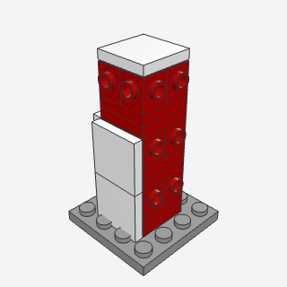
snot_corethe hidden block in the middle of a sculpture, with studs pointing out on all four sides as well as up, so the skin can be pressed on every face.
Gives a sculpture's middle studs on all four sides, so contour slabs, caps, eyes, and tiles can be pressed on every face of a head or body.
Note: VARIANT of snot_panel turned into a 3D hub. Courses are 5 plates (2 studs) so a 2-stud panel hung by its upper row sits flush with each course.
x, y, z, size, courses, colorbatch-16/snot_core.py26604 + 87087 + 4733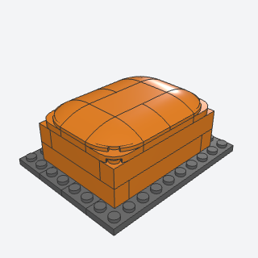
curved_slope_skina block whose top edges are rounded off with curved slopes and whose top is tiled, so a stack of bricks reads as a smooth, soft body instead of a box.
Turns any boxy body (an animal's back, a cartoon torso, a loaf of a creature) into a soft rounded form with no studs on top.
Note: Rounds the top edges only; the underside edges (inverted curved slopes) are left for a later variant. Plate 2 x 2 with Corner Round (79491) points its round corner a quarter turn behind 5852 at the same rot.
x, y, z, width, length, courses, color, topbatch-16/curved_slope_skin.py15068 + 5852 + 11477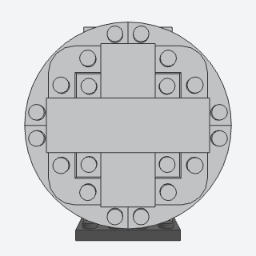
contour_slaba smooth rounded outline (a cheek, the side of an egg, a shoe's toe) built flat as layers of plates cut to the shape, then stood on its side and pressed onto the side studs of a core, so the silhouette is the plates' outline instead of a stair of bricks.
Gives a head, cheek, egg side, or shoe toe a smooth rounded outline seen from the front, pressed onto a SNOT core.
Note: The outline is a rounded rectangle (round when width = height = 8), not a free curve. The inner layer's round corners keep their studs: the round corner tiles (27925, 79393) have body boxes that misplace them by about 0.4 studs, so I left them out.
x, y, z, width, height, facing, colorbatch-16/contour_slab.py30565 + 30357 + 79491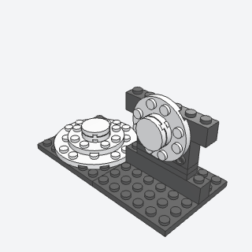
layered_plate_capa gently domed cap of round plates, each 2 studs smaller than the one under it, topped with a round tile; one on each face of a core makes a ball.
A domed cap for a face of a core: six make a ball, one makes the top of a head, a button, or a lamp.
Note: Built from round plates 8/6/4/2 (studs in rings, the pebbled look) instead of the book's rounded-square layers with curved slope edges.
x, y, z, size, facing, colorbatch-16/layered_plate_cap.py11213 + 60474 + 4032a + 14769 (some of its parts weren't confirmed from the book; I'd pin them when writing it)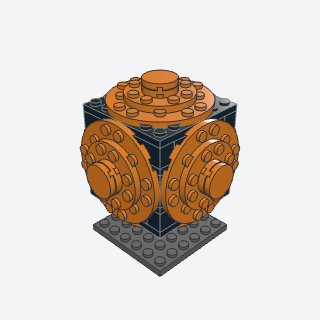
sphere_from_capsa ball about 9 studs across, a cube-shaped core with a domed cap of round plates on each of its six faces: a ball, a planet, a round head, a piece of fruit.
A ball about 9 studs across: a basketball, a planet, a round head or fruit.
Note: The book's hub is Technic; this core is bricks with 1 x 2 x 1 2/3 side-stud bricks, so the result reads as a rounded cube with the core's dark edges as seams. Larger balls would need the Technic hub.
x, y, z, color, corebatch-16/sphere_from_caps.py11213 + 22885 + 14769 (some of its parts weren't confirmed from the book; I'd pin them when writing it)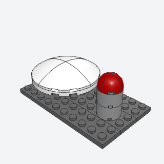
dome_from_quartersa smooth half ball from four quarter pieces round a center, each a quarter turn from the last: a nose tip, the top of a head, a robot's dome.
A smooth half ball (nose tip, head top, robot dome, lamp) at 2, 4, 6, or 8 studs.
x, y, z, size, colorbatch-16/dome_from_quarters.py5852 + 76797 + 49612 + 5848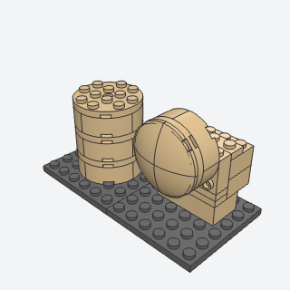
rounded_columna short round cylinder from four corner round bricks a course, tied by round plates, with an optional dome on the end: a muzzle, a leg, a foot, an eye pod, a pillar, upright or standing out of a face.
A short cylinder for a muzzle, leg, foot, eye pod, or pillar, upright or standing out of a face, with an optional dome end.
x, y, z, size, courses, cap, facing, colorbatch-16/rounded_column.py3063b + 5152 + 2577 + 60474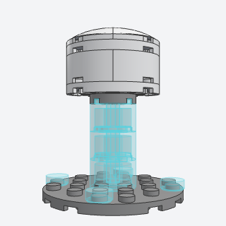
hover_standa figure floating above its base on a short glowing column of transparent round bricks, the way a hovering robot or a spirit is displayed.
Displays a robot, ghost, or spirit floating over its base on a glowing transparent column.
Note: Alternate, replacing egg_from_panels: four flat rounded panels on a core read as a rounded box from every view but straight on; an egg needs bulging curved-slope panels, more than a sketch. 4032a isn't made in Trans Light Blue, so the column's cap is in the base color.
x, y, z, height, size, color, glowbatch-16/hover_stand.py3941 + 11213 + 98138 (some of its parts weren't confirmed from the book; I'd pin them when writing it)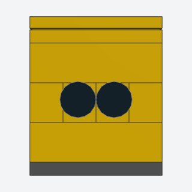
side_stud_eyestwo round eyes on the face of a small head, each on the stud of a brick with a stud on its side, laid in the course where the eyes go.
The simplest face for a small character: two round eyes in the face row of a 4-6 stud head.
Note: The plain eye is a white round plate under a black round tile of the same size, so from the front it reads as a black dot.
x, y, z, width, spacing, facing, color, eyebatch-16/side_stud_eyes.py87087 + 98138 + 6141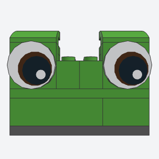
big_round_eyea large expressive eye, a printed round tile 2 x 2 on the four side studs of a brick 1 x 2 x 1 2/3, under a curved slope for an eyelid: for a bird, a robot, a cartoon creature.
Large expressive eyes for a bird, robot, or cartoon creature at 6-8 stud heads.
Note: The printed eye pattern is my pick from the library (14769p0p, copper iris; 14769p01 plain black).
x, y, z, facing, color, eye, lid, lid_colorbatch-16/big_round_eye.py14769p0p + 22885 + 15068 (some of its parts weren't confirmed from the book; I'd pin them when writing it)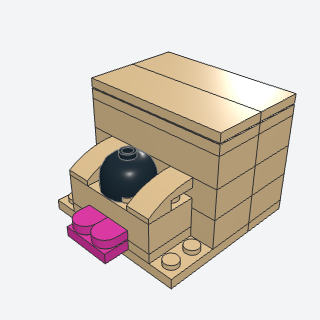
muzzle_and_nosean animal's face, a muzzle standing out from the head with its top corners rounded, a round dark nose on its tip, and a tongue poking out under it: a dog, a cat, a bear.
A dog, cat, or bear face: a muzzle standing out from the head with a dark round nose and a tongue.
Note: The small-scale method from the dog book; the large one (rounded_column with a dome, nose on the tip) is rounded_column with facing front.
x, y, z, width, color, nose, tonguebatch-16/muzzle_and_nose.py30367a + 24246 + 11477 (some of its parts weren't confirmed from the book; I'd pin them when writing it)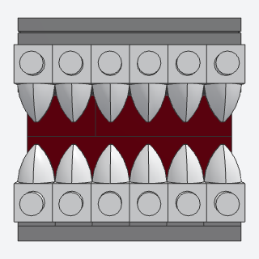
teeth_rowa jaw's edge set with sharp white teeth, plates 1 x 1 with a tooth standing on the side studs of the jaw's front course, pointing up from the lower jaw or down from the upper: a shark, a dinosaur, a monster.
An open mouth with sharp teeth for a shark, dinosaur, or monster, upper and lower jaws.
Note: Teeth are plates 1 x 1 with tooth in-line on side studs (Rot y=-90, z=90 points the tooth up on a front face). The upper jaw comes with a plate 2 x length that ties it to the wall behind the mouth.
x, y, z, length, jaw, facing, color, teethbatch-16/teeth_row.py49668 + 87087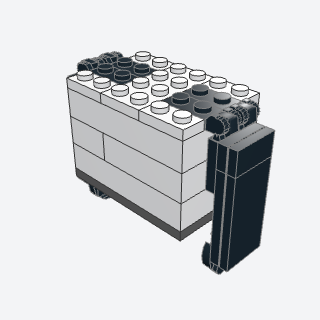
floppy_eara long flat ear built as a sub-assembly and hung on click hinges at the top edge of a head, so it hangs beside the head and swings out: a dog's, a rabbit's, an elephant's.
Hanging ears that swing for dogs, rabbits, and elephants.
Note: The books hang ears on clips; this uses click hinge plates (the angled_hull_panel placement), so any angle is exact and validates. Click hinge plates come in few colors (Black default).
x, y, z, length, angle, facing, color, hinge_colorbatch-16/floppy_ear.py44301b + 44302b + 4032a (some of its parts weren't confirmed from the book; I'd pin them when writing it)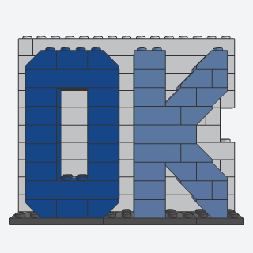
brick_lettersa word in big, chunky capital letters built studs up, their fronts the smooth sides of bricks, the diagonals and round corners filled with 45-degree slopes, on an optional contrasting outline wall behind.
Big chunky lettering for a sign, a name, a number, or a word sculpture: any text from A-Z, 0-9.
Note: Covers letter_relief, letter_diagonal, and letter_set_recipe. All 37 glyphs (A-Z, 0-9, period) validate clean; height 9-15 by repeating plain middle rows. Diagonals step one stud per brick row with 45-degree slopes, so N, M, V, and Z are short stair diagonals, not true slants. Steps are scheduled so an overhanging piece goes in with the piece that ties it.
x, y, z, text, height, depth, color, color2, outlinebatch-16/brick_letters.py3039 + 3660b + 3001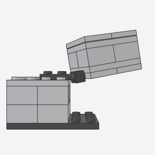
posable_neck_balla head on a ball joint at the front of a body, so it turns and nods: a plate with a ball on the body, a plate with a socket under the back of the head.
A head on a ball joint that turns and nods, for an animal or creature whose head sits in front of its body.
Note: VARIANT of ball_joint_arm (the same ball and socket math). The books turn heads on an axle or a turntable; a ball joint does both. 22890 is made only in Dark Bluish Gray, 14418 in grays. The head is a plain block; dress it by building on the copy.
x, y, z, turn, nod, width, depth, courses, color, joint_colorbatch-16/posable_neck_ball.py22890 + 14418 (some of its parts weren't confirmed from the book; I'd pin them when writing it)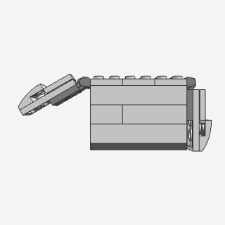
hinged_limban arm or a wing built flat as a sub-assembly and hung on click hinges at a body's shoulder edge, so it swings out from the body or folds flush against it: a robot's arm, a bird's wing, a flipper.
Arms or wings that swing out from a body or fold flush against it.
Note: VARIANT of angled_hull_panel: the same click hinge placement with an arm or wing panel; shares its hinge code with floppy_ear. One segment; a forearm on a second hinge is left out.
x, y, z, length, angle, style, facing, color, hinge_colorbatch-16/hinged_limb.py44301b + 44302b + 15068 + 41770a (some of its parts weren't confirmed from the book; I'd pin them when writing it)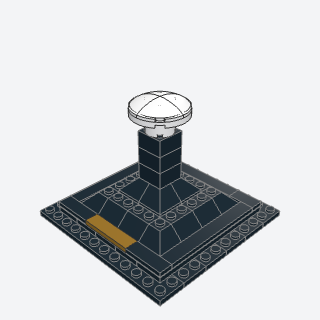
pyramid_pedestala dark tapered stand that holds a bust, a head, or a helmet up off a square plinth, with a nameplate set flush in the plinth's front.
A display stand that holds a bust, head, or helmet up off a square plinth with a nameplate.
Note: No Technic spine: the sculpture sits on the column's top 4 studs. The plinth's bottom step keeps its studs.
x, y, z, height, color, name_colorbatch-16/pyramid_pedestal.py3045 + 3039 + 3003 + 2431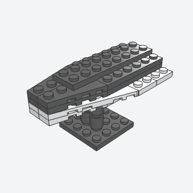
countershade_bellyan animal's body with a dark back and a pale belly, built in layers of plates with wedge plates at the nose, the color changing on a layer whose white edge stands out under the dark ones as a clean pale line.
A fish, shark, or dolphin body with a dark back, pale belly, and a clean pale line between.
Note: The book shifts white wedge plates out half a stud; here the white layer is a stud wider, so the line is a 1-stud ledge. Wing 3 x 6 Right sits 0.05 studs in (its body is 2.95 studs wide).
x, y, z, length, back, bellybatch-16/countershade_belly.py54383 + 54384 + 41769a + 41770a (some of its parts weren't confirmed from the book; I'd pin them when writing it)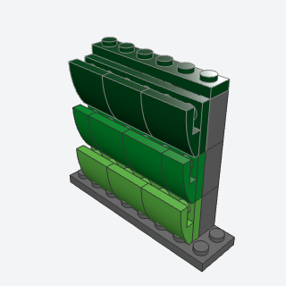
feather_shinglesa bird's plumage in bands of color, strips of small curved slopes built flat and hung on a studded side so each band overlaps the one below like roof shingles, every other band shifted half a feather.
A bird's plumage, or a dragon's or fish's scales, in overlapping bands of graded color on a creature's side.
x, y, z, length, colors, facing, wallbatch-16/feather_shingles.py15068 + 11477 + 22885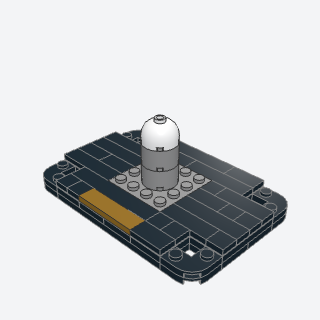
smooth_display_basea neat base for a model, two layers of plates with rounded corners, its top tiled like boards in staggered lengths, open studs only where the model sits, and a nameplate tile set flush in the front edge.
Makes any model look finished: a smooth rounded base with boarded tiles, a seat of studs, and a nameplate.
Note: VARIANT of landing_zone, with nameplate_tile folded in. The book rounds the corners with round corner tiles (27925), but that part's body box puts it about 0.4 studs off in the DSL, so the corners keep the round-cornered plates' studs.
x, y, z, length, depth, seat, color, name_color, name_length, seedbatch-16/smooth_display_base.py79491 + 2431 + 6636 (some of its parts weren't confirmed from the book; I'd pin them when writing it)